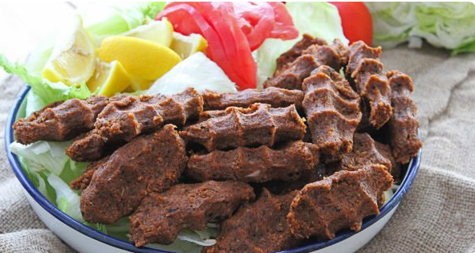
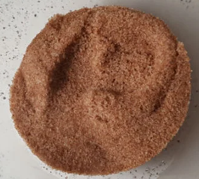
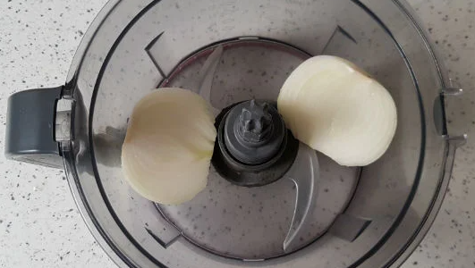
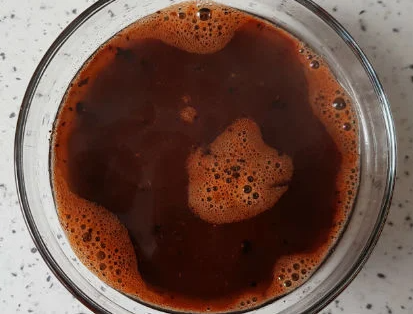
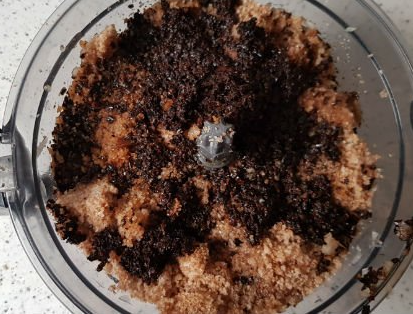
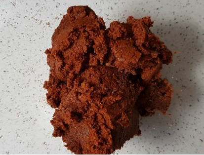

Here is our favorite snack-like Dish
Ingredients
Cooking Suggestions
While passing it through the robot, continue to operate by stopping your robot from time to time and cleaning
the materials sticking to the blades so that all the materials are blended with each other.
the consistency is too thick, you can add olive oil. You can adjust the bitterness and sourness level according to your taste.
How To Make Turkish Redrice
Take the bulgur in a deep bowl and pour 1.5 glasses of hot water on it. Cover it and let it sit for 10 minutes.

While the bulgur is rising, pull the onion from the robot and press it in a strainer.

Take the isot in a bowl and add hot water to it and let it sit for 5 minutes.

After the bulgur rises, put the puffed bulgur in the food processor and add the onion,
soaked isot (with its juice), lemon juice, pomegranate syrup, olive oil, salt,
tomato paste and red pepper from the robot, and grind it for 10 minutes, stopping it from time to time.

Then take it in a bowl and knead it in your hands for a few more minutes and shape it.

And here it is the delicious Turkish Redrice Bon appetit!